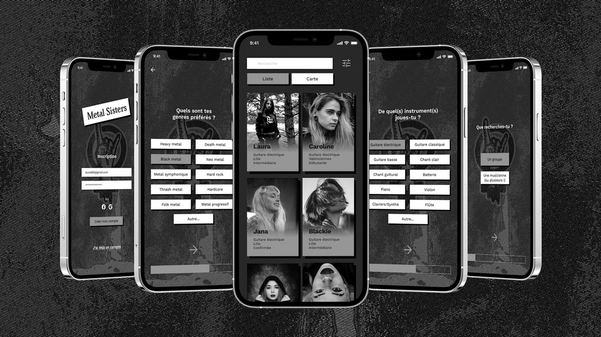
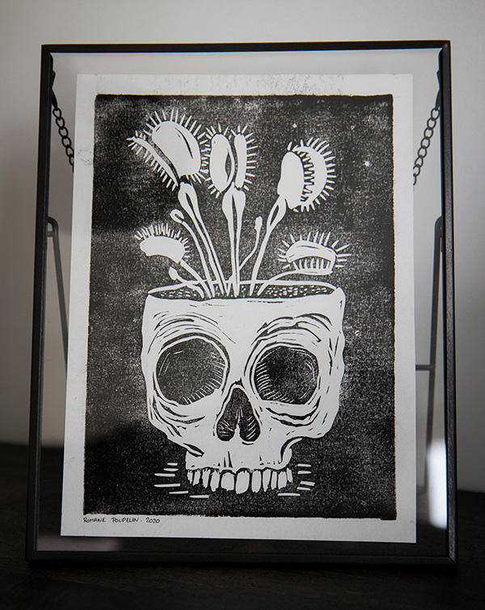

×
Romane Poupelin
Photographie
A propos
Contact
EN

Romane Poupelin
Design graphique
Bonjour !
Je suis étudiante en Master de
Design Graphique et d'Interaction
, aussi amatrice de
photographie
, de gravure et de
heavy metal
ü§òüèª.
Basée à Valenciennes et Orléans.
